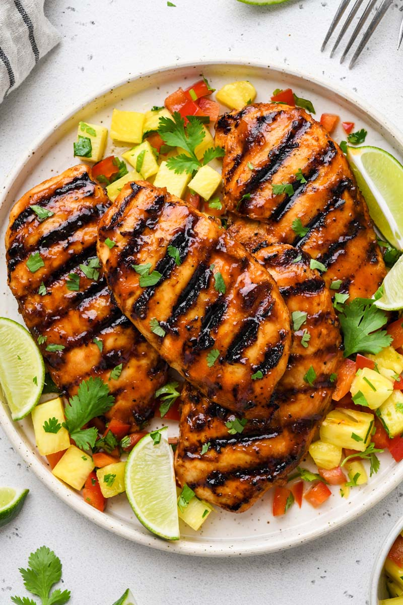
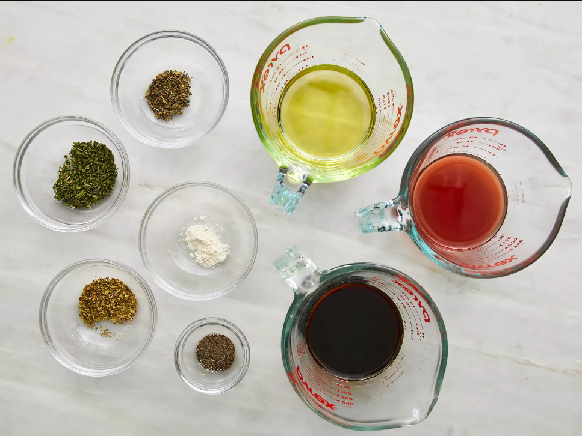
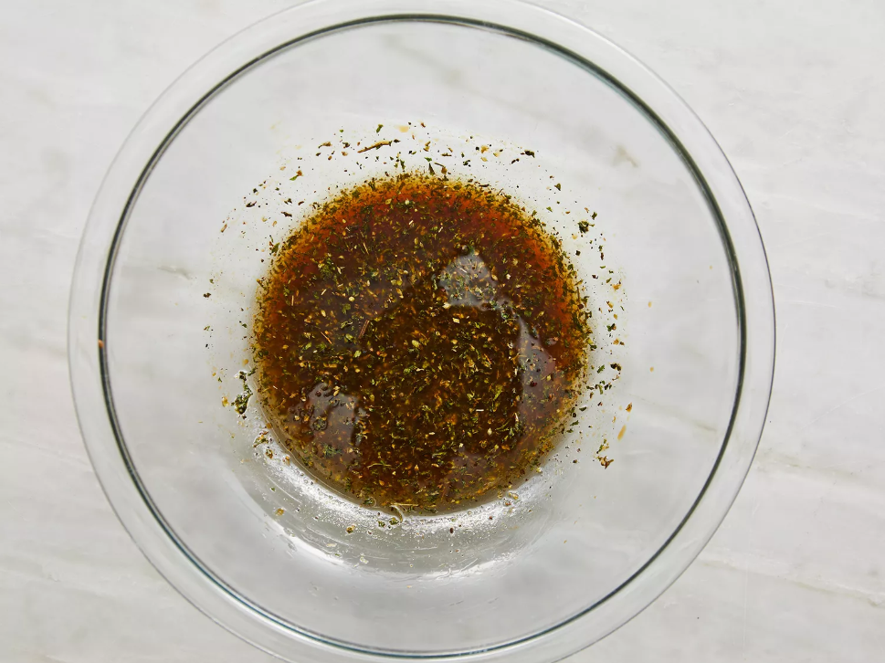
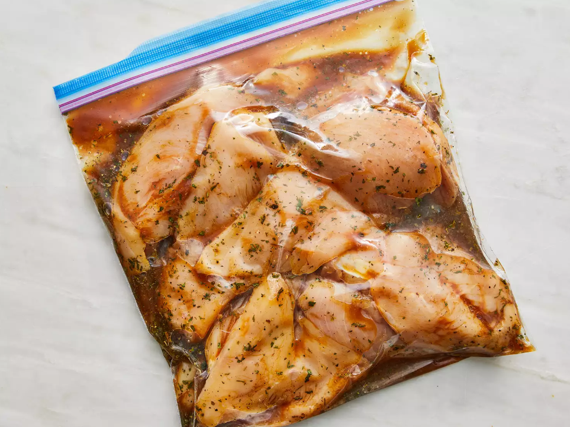
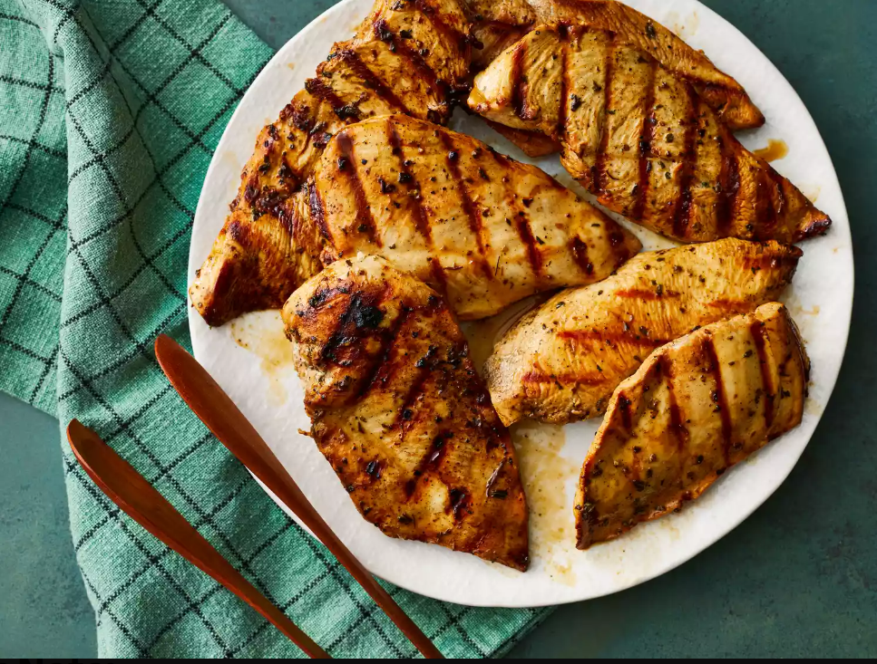

Grilled Chicken Marinade
This grilled chicken marinade is the best! It is so flavorful and so simple to prep with easy pantry ingredients. Perfect for any occasion.
Grilled Chicken Marinade Ingredients
You likely have everything you need for this top-rated grilled chicken marinade in your pantry. If not, here's what you'll need to add to your grocery list:
- Red wine vinegar: This top-rated grilled chicken marinade starts with sweet, tangy, and flavorful red wine vinegar.
- Aromatic olive oil:infuses the meat with flavor and moisture, ensuring deliciously juicy chicken every time.
- Soy sauce: This grilled chicken marinade calls for low sodium soy sauce, which we think delivers the perfect amount of saltiness. Of course, if you like your marinade extra salty, you can use regular soy sauce.
- Spices and seasonings: This savory grilled chicken marinade calls for these earthy, herbaceous spices and seasonings: dried parsley flakes, dried basil, dried oregano, garlic powder, and ground black pepper.
How to Make Grilled Chicken Marinade
It truly couldn't be easier to make this chicken marinade: Simply mix the first eight ingredients (vinegar, soy sauce, olive oil, parsley, basil, oregano, garlic powder, and black pepper) in a bowl and pour into a zip-top bag.
Of course, you'll find the full recipe below — including step-by-step instructions for marinating and grilling the chicken.
How to Use Grilled Chicken Marinade
This recipe offers detailed instructions for marinating and grilling skinless, boneless chicken breasts. You can't ask for an easier or more delicious meal! The marinated breasts pair perfectly with just about anything,
and they're the perfect choice for busy weeknights or your pickiest dinner guests.
Ingredients for 10 Servings
- ½ cup red wine vinegar
- ½ cup reduced-sodium soy sauce
- ½ cup olive oil
- 1 tablespoons dried parsley flakes
- 1 teaspoon dried basil
- 1 teaspoon dried oregano
- ½ teaspoon garlic powder
- ½ teaspoon ground black pepper
- 10 skinless, boneless chicken breasts, thinly sliced
Directions
Step 1
Gather all ingredients.
Step 2
Whisk vinegar, soy sauce, olive oil, parsley, basil, oregano, garlic powder, and black pepper together in a bowl.
Step 3
Pour into a resealable plastic bag. Add chicken, coat with the marinade, squeeze out excess air, and seal the bag. Marinate in the refrigerator, at least 4 hours.
Step 4
Preheat grill for medium-low heat and lightly oil the grate. Drain and discard marinade.
Step 5

Nutrition Facts
Servings Per Recipe:10
Calories:233
-------------------------------------------------------------------------------------------------------------------------------------% Daily Value *
Total Fat: 14g ----------------------------------------------------------------------------------------------------------------------- 17%
Saturated Fat: 2g ----------------------------------------------------------------------------------------------------------------- 12%
Cholesterol: 65mg ---------------------------------------------------------------------------------------------------------------- 22
Sodium: 482mg -------------------------------------------------------------------------------------------------------------------- 21%
Total Carbohydrate: 2g ---------------------------------------------------------------------------------------------------------- 1%
Dietary Fiber: 0g ------------------------------------------------------------------------------------------------------------------ 1%
Total Sugars: 0g -------------------------------------------------------------------------------------------------------------------
Protein: 24g ----------------------------------------------------------------------------------------------------------------------- 49%
Vitamin C: 0mg ------------------------------------------------------------------------------------------------------------------- 0%
Calcium: 22mg -------------------------------------------------------------------------------------------------------------------- 2%
Iron: 1mg --------------------------------------------------------------------------------------------------------------------------- 8%
Potassium: 246g ----------------------------------------------------------------------------------------------------------------- 5%
* Percent Daily Values are based on a 2,000 calorie diet. Your daily values may be higher or lower depending on your calorie needs.
** Nutrient information is not available for all ingredients. Amount is based on available nutrient data.
(-) Information is not currently available for this nutrient. If you are following a medically restrictive diet, please consult your
doctor or registered dietitian before preparing this recipe for personal consumption.